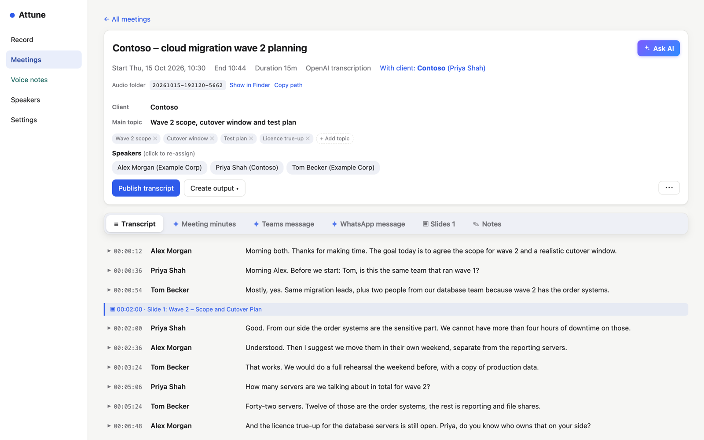
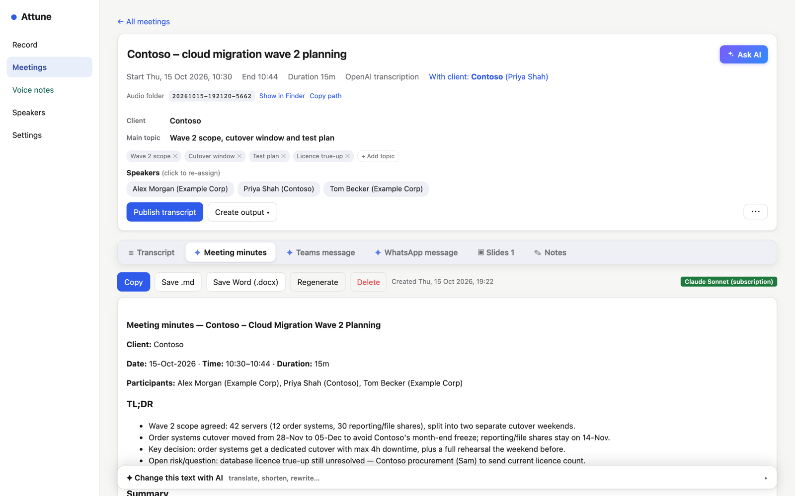
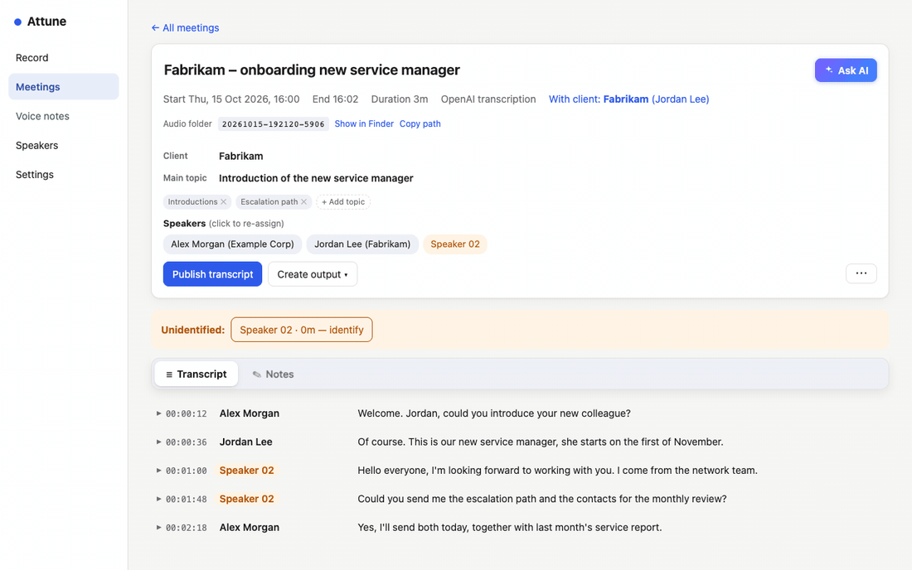
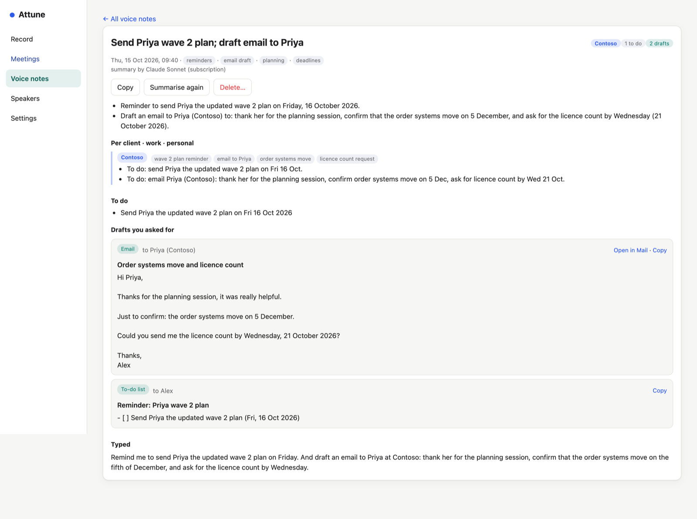

Attune
Records your meetings on your Mac, writes the transcript with the right name next to every line, and turns it into minutes, short messages and answers. You decide, per meeting, what may leave your Mac.

What it does
Both sides of every call
Your microphone and everything your Mac plays — no bot joins the meeting.
Knows who is speaking
Name a voice once; Attune recognises it in every later meeting.
Mixed languages
English and German in one call? Each line in the language actually spoken.
Minutes in one click
TL;DR, decisions, actions — or a short Teams or WhatsApp message.
Ask about your meetings
"What did I promise?" — answers with quotes you can check.
See what it costs
Tokens and cost per meeting, day and month.
Minutes, messages, answers
Pick a format — minutes, an email summary, a Teams or WhatsApp message, or one you wrote yourself — and paste it straight into Outlook, Teams or WhatsApp.
- Questions with their answers, decisions and actions
- Change any text with one instruction
- Written in the language of the meeting

Name a voice once
New voices are marked. Click one, type the name, done — from then on Attune knows who is talking. Voiceprints never leave your Mac.

Voice notes that sort themselves
Press ⌃⌥N and say what's on your mind. Attune summarises it, files it per client, keeps personal things apart, writes a weekly note per client — and drafts the email you asked for, in your own style.

Private by design
On your Mac
Recordings, transcripts and the voice library are stored only on your Mac. No Attune server, no telemetry.
Confidential meetings
One tick and nothing leaves your Mac: on-device transcription, local speaker matching, no cloud AI.
Your choice of AI
Claude, OpenAI, a ChatGPT subscription — or the model built into Attune.
Read the full privacy policy.
The iPhone app
Record voice notes and meetings in the room with your iPhone. Recordings reach your Mac through your own iCloud — even when the Mac is closed — and summaries and drafts come back to the phone.
Get Attune
Version 1.0 for Macs with Apple silicon and macOS 14.4 or later. Signed and notarised by Apple.
Open the DMG, drag Attune into Applications, and follow “Read me first”. Help is built in (Help › Attune Help) and online.